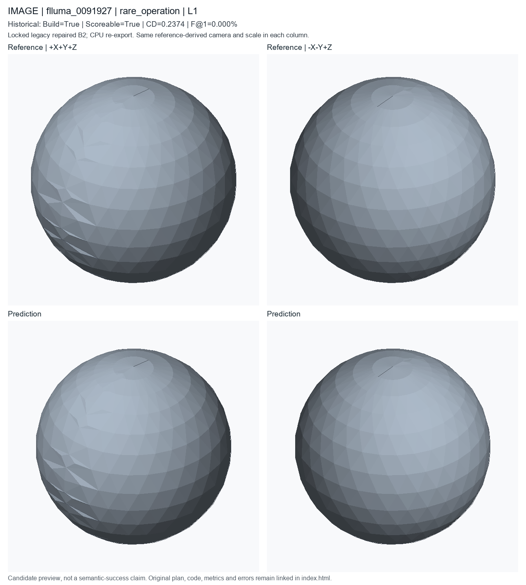
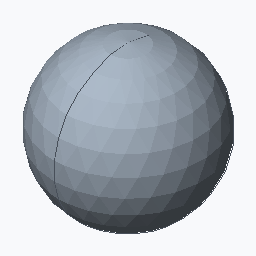

rare_operation; L1; historical deployed repaired B2. Candidate status is unchanged.
Rarest reference OP_* by object frequency in all2500 test objects; scoreable/median-F@1 preference then sample ID
These are new CPU exports of locked historical code, not newly generated model predictions or recovered original temporary STEP files. Executable does not mean semantically accurate. Historical seed/checkpoint-byte binding remains unresolved.


A with an approximate 12.329 by 12.305 by 12.42 mm envelope. Sphere stock with approximate dimensions of 12.3 by 12.3 by 12.4 mm.
PART flluma_0005000 CAT sphere_stock UNITS mm SEED 20265514 PARAM radius 5.9 MIN 1.5 MAX 16 SEM sphere_radius F sphere_001 OP_SPHERE SEM primitive_stock ROLE primary_body PARAMS radius=@radius END
# Literal first40 lines of executed prediction; full program is prediction.py
params = Parameters()
params.add('radius', 5.9, min=1.5, max=16.0, semantic_type='sphere_radius')
part = Part('flluma_0005000', category='sphere_stock', parameters=params, seed=20265514, sample_id='flluma_0005000', units='mm')
sphere = part.sphere(name='sphere_stock_body', radius=params['radius'], semantic_type='primitive_stock')
__all__ = ['part']